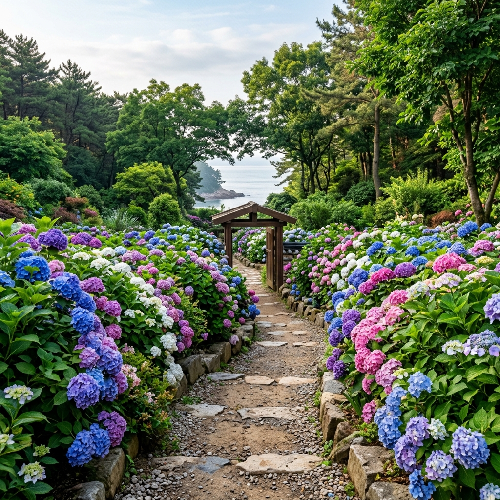
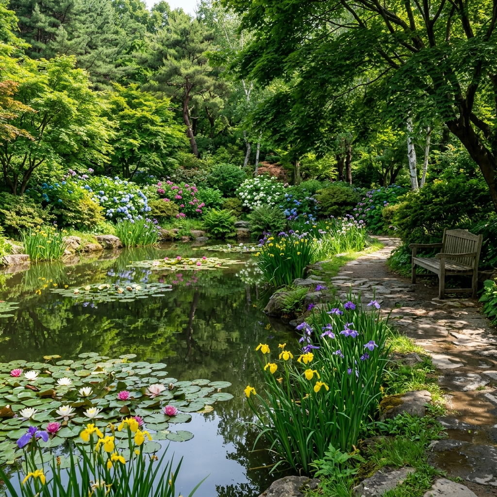

미국인 귀화 한국인 민병갈(Carl Ferris Miller) 원장은 1970년 천리포 해안가 황무지에서 식목을 시작했습니다.
반세기가 지난 지금, 이 자리에는 전 세계 16,000여 종의 식물이 자라는 정원이 만들어졌습니다. 2000년 국제수목학협회(IDS)로부터 '세계에서 가장 아름다운 수목원'으로 인정받았으며, 국내에서 이런 수준의 정원을 만나기는 쉽지 않습니다.
수목원이 서해 천리포 해안과 바로 맞닿아 있어, 정원 담장 너머로 서해 바다가 보이는 독특한 입지 조건을 갖추고 있습니다. 꽃과 바다를 동시에 담을 수 있는 이 구도가 수목원 탐방의 가장 큰 매력입니다.
천리포수목원은 현장 발권이 기본이지만, 주말이나 수국 절정 시기에는 인원이 일찍 마감될 수 있습니다.
공식 홈페이지(chollipo.org)의 네이버 예약 시스템으로 사전 입장권 구매를 권장합니다. 2026년 6월 기준 성인 입장료는 13,000원(성수기인 4~5월은 15,000원), 우대 요금(중·고등학생, 70세 이상 등) 10,000원, 특별 우대(초등학생 이하) 6,000원입니다. 운영 시간은 매일 오전 9시~오후 6시이며 입장 마감은 오후 5시입니다.
단체(30인 이상) 방문은 반드시 사전 예약이 필요합니다. 가든스테이(숙박)를 예약한 투숙객은 수목원 입장이 무료입니다. 밀러가든을 중심으로 수국 집중 구역이 조성되어 있으니 입구에서 안내 지도를 꼭 챙기세요.

수목원 면적이 약 60만㎡로 넓기 때문에 탐방 동선을 미리 생각해두는 것이 좋습니다.
입구에서 수령된 안내 지도를 보고 수국 집중 구역을 확인하세요. 일반적으로 밀러가든 구역에 수국이 밀집해 있으며, 목련원과 연못 구역을 거쳐 해안 경관 정원 쪽으로 나오는 방향이 가장 알찬 코스입니다. 전체 탐방은 천천히 걸으면 약 1.5~2시간이 소요됩니다.
현장 직원에게 당일 가장 활짝 핀 수국 구역을 물어보면 최적의 동선을 안내받을 수 있습니다. 수목원 공식 SNS(@chollipo)에서 전날 개화 사진을 확인하고 방문 여부를 결정하는 것도 좋은 방법입니다.
천리포수목원에서 볼 수 있는 수국은 국내 어느 명소보다 다양합니다.
일반적인 수국(Hydrangea macrophylla)은 대형 꽃구 형태이며 토양 산도에 따라 파란색~분홍색으로 변합니다. 산성 토양에서는 파란색, 알칼리성에서는 분홍색으로 피어납니다. 떡갈잎수국(H. quercifolia)은 떡갈나무 잎 모양의 큰 잎과 원뿔형 흰 꽃이 특징으로 6월 중순부터 피기 시작합니다.
아나벨(H. arborescens)은 구형의 대형 흰 꽃이 탐스럽고, 등수국(H. anomala petiolaris)은 담장이나 나무를 타고 올라가는 덩굴 형태로 레이스 같은 흰 꽃을 피웁니다. 품종마다 개화 시기가 조금씩 달라 6월 내내 새로운 종이 피고 집니다.
수국 외에도 천리포수목원에는 계절마다 다른 볼거리가 펼쳐집니다.
목련원에는 전 세계 926종 이상의 목련이 자라고 있어 3~4월이 절정이지만, 6월에는 무성한 잎이 그늘을 만들어 산책하기에 쾌적합니다. 연못 구역에서는 6월부터 수련과 창포가 꽃을 피우기 시작해 동양화 같은 풍경을 연출합니다. 수면 위에 비치는 반영 사진도 인기 있는 촬영 포인트입니다.
해안 경관 정원은 수목원 서쪽 끝 구역으로, 서해가 바로 눈앞에 펼쳐집니다. 벤치에 앉아 바다를 바라보며 쉬다 보면 이곳이 정원인지 해변인지 경계가 흐려지는 특별한 경험을 합니다.

천리포수목원 가든스테이는 수목원 내 숙박 시설에서 하룻밤을 보내는 프로그램입니다.
폐원 후 아무도 없는 수목원에서 조용히 저녁 산책을 즐기고, 다음 날 이른 아침 개원 전 홀로 정원을 탐방하는 경험은 방문한 이들이 하나같이 최고의 경험으로 꼽습니다. 수국 절정 시기 주말 가든스테이는 예약이 수 개월 전에 마감될 정도로 인기가 높습니다.
가든스테이 투숙객은 수목원 입장이 무료이며, 가든하우스와 에코힐링센터 두 종류의 숙박 시설이 있습니다. 예약은 공식 홈페이지를 통한 네이버 예약 시스템으로 진행합니다.
수목원 탐방 후에는 차로 20분 거리 꽃지해변으로 이동합니다.
1km 남짓 이어지는 백사장 끝에 우뚝 솟은 할미바위와 할아비바위는 두 바위 사이로 해가 지는 일몰 풍경으로 전국적 낙조 명소입니다. TV 드라마와 사진작가들이 단골로 찾는 배경입니다. 6월 일몰 시각은 오후 7시 40분~8시경이므로 오후 5~6시에 수목원을 나와 이동해도 여유롭게 낙조를 기다릴 수 있습니다.
낙조 1시간 전부터 해변을 걸으며 구도를 잡고 기다리는 것이 좋습니다. 해가 기울기 시작하는 오후 7시 이후 약 30분이 하늘이 가장 붉게 타오르는 황금 시간입니다. 주차장은 해변 인근에 있으며 소형차 기준 유료로 운영됩니다.
태안과 안면도는 서해 청정 어장에서 잡히는 제철 해산물이 풍부합니다.
6월은 꽃게 시즌이 이어지는 시기로, 꽃게탕이나 간장게장을 현지에서 즐기기 좋습니다. 태안 지역 간장게장은 짜지 않고 깔끔한 맛이 특징입니다. 키조개는 태안 앞바다 특산물로, 관자 구이나 샤브샤브 형태로 즐기는 것이 대표적입니다.
먹거리 가격은 식당마다 다르고 시세에 따라 달라지므로 메뉴판을 기준으로 확인하세요. 안면도 꽃지해변 주변과 태안 시내에 해산물 전문 식당이 많습니다. 수목원 방문 후 낙조 전 점심 식사를 해결하거나, 낙조 감상 후 저녁 식사로 마무리하는 것이 일반적인 코스입니다.
안면도에는 천리포수목원과 꽃지해변 외에도 볼거리가 많습니다.
안면도 자연휴양림은 수령 150년 이상 안면송 군락지로 조성된 숲으로, 6월 진한 초록 소나무 숲 사이를 거니는 경험이 탁월합니다. 숲속 캠핑장도 있어 1박 여행을 즐기는 분들에게 적합합니다. 청포대해변은 꽃지해변 북쪽에 있는 작고 조용한 해변으로, 맑은 바닷물과 고운 모래가 특징입니다.
안면도 전체를 여유 있게 돌아보려면 자가용이 필요합니다. 1박 2일 일정이라면 첫날 천리포수목원~꽃지 낙조, 둘째 날 안면도 자연휴양림~청포대해변 코스를 추천합니다.
서울 강남고속버스터미널에서 태안행 버스를 이용하거나 자가용으로 서해안고속도로를 타고 서산IC를 지나 안면대교를 건너 안면도로 진입합니다.
서울 기준 약 2시간 내외 소요됩니다. 천리포수목원 입장료는 성인 13,000원(2026년 6월 기준)이며 사전 예약이 권장됩니다. 꽃지해변은 별도 입장료 없이 무료로 방문 가능합니다.
당일치기 추천 일정은 서울 오전 8시 출발 → 천리포수목원 오전 탐방(9시~12시) → 태안 해산물 점심 → 꽃지해변 오후 산책 → 낙조 감상(오후 7시 40분경) → 귀가입니다.